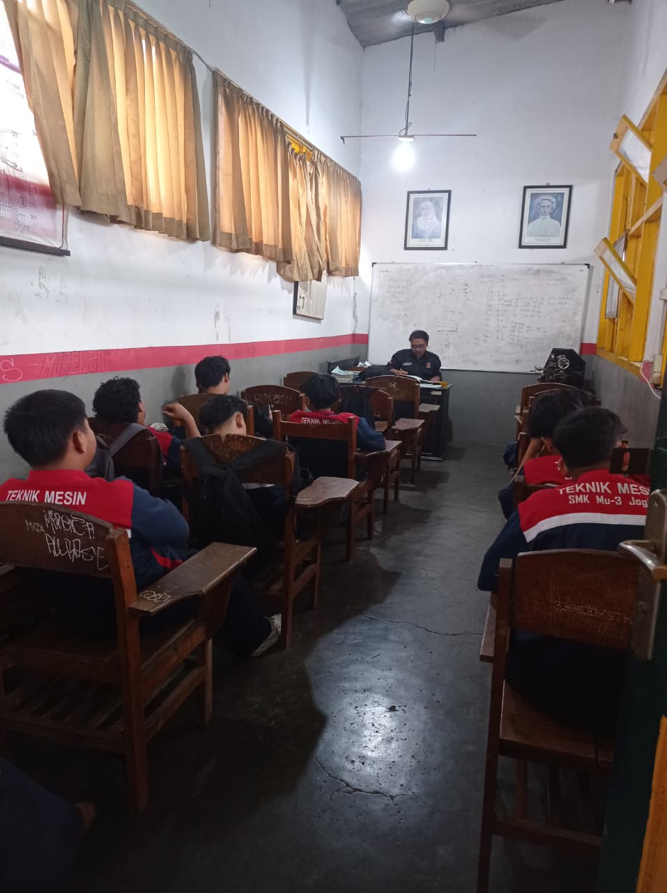
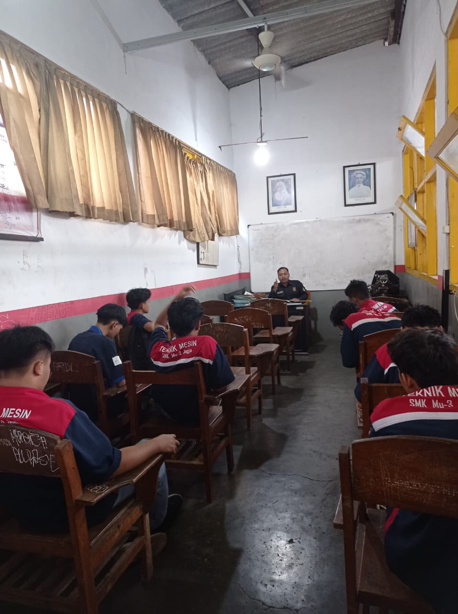
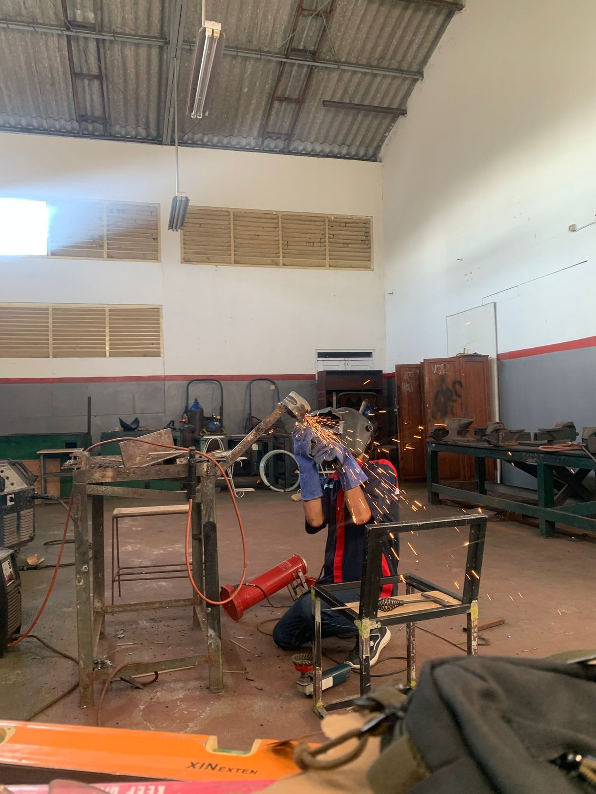
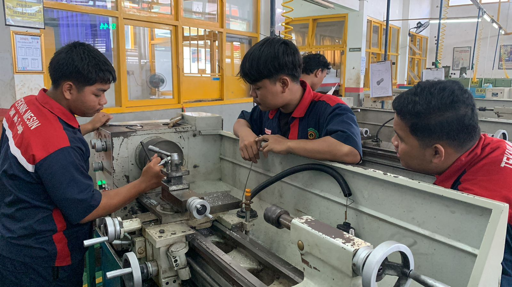
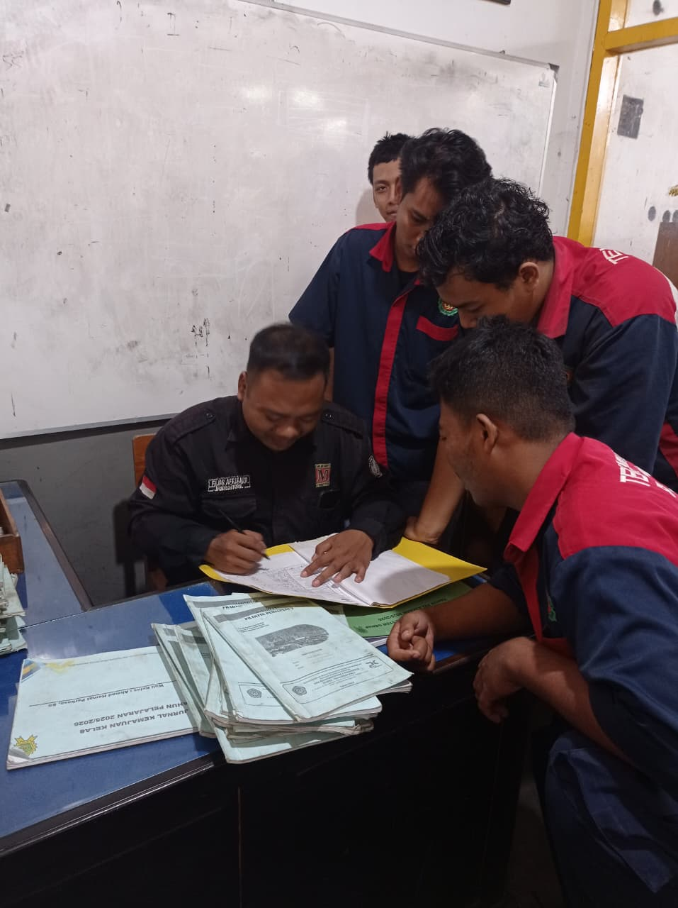
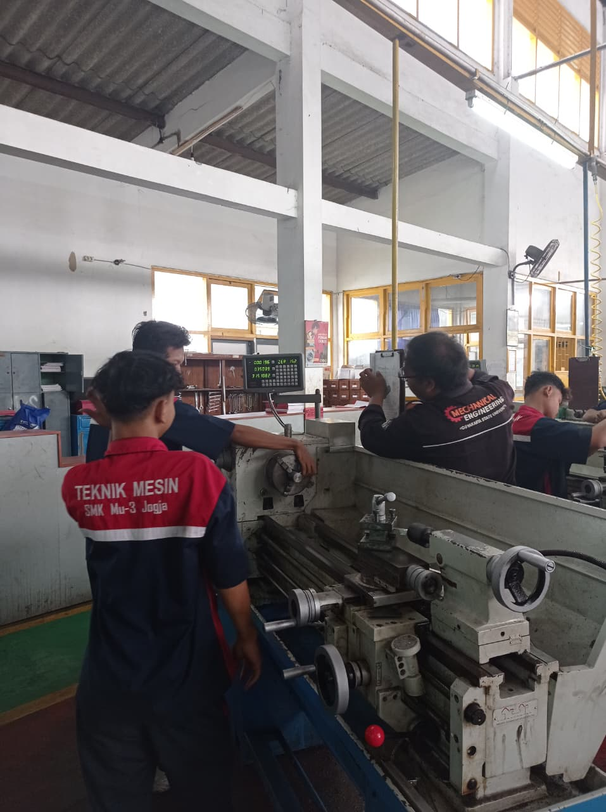
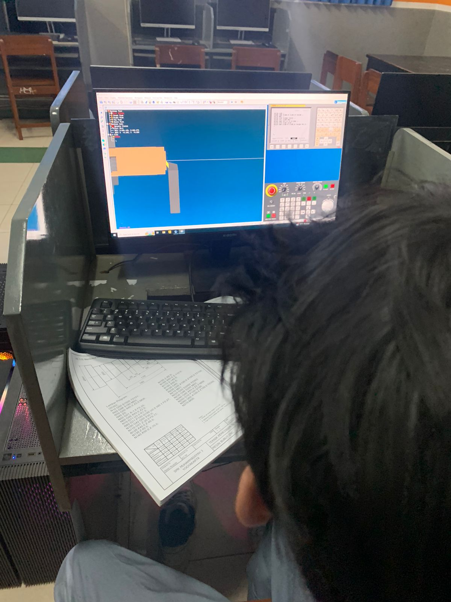

RPP (Rencana Pelaksanaan Pembelajaran)
Skenario pembelajaran Pemesinan Bubut terstruktur yang dibagi menjadi 3 siklus pelaksanaan:
Portfolio ini merupakan refleksi awal sebagai fondasi dasar karakter untuk menjadi seorang pendidik yang profesional, berdedikasi, dan inspiratif.
Halo, perkenalkan nama saya Fajar Afrianto. Saya berasal dari Bantul, Daerah Istimewa Yogyakarta.
Daerah Bantul terkenal dengan keunikan budayanya, terutama budaya gotong royong yang masih kental dan kehidupan masyarakat yang sederhana namun penuh kebersamaan. Nilai-nilai gotong royong dan kesederhanaan ini membentuk karakter saya untuk selalu menghargai keberagaman, kerja sama, dan pentingnya kontribusi positif bagi komunitas sekitar.
Inspirasi terbesar saya untuk menjadi guru profesional berawal dari pengalaman berharga bertemu dengan guru yang tidak hanya mentransfer ilmu, tetapi juga memberikan teladan hidup yang luar biasa.
Pendidikan adalah fondasi utama masa depan bangsa. Tujuan saya adalah menjadi pendidik sekaligus fasilitator yang mampu menyalakan potensi terbaik siswa dan membimbing mereka dengan ketulusan.
"Pendidikan bukan tentang mengisi wadah kosong, melainkan menyalakan api keingintahuan."







Kumpulan dokumen dan hasil karya sebagai bukti pelaksanaan pembelajaran.
Skenario pembelajaran Pemesinan Bubut terstruktur yang dibagi menjadi 3 siklus pelaksanaan:
Rekaman visual praktik mengajar langsung yang menampilkan dinamika interaksi, pengelolaan kelas, dan penguasaan materi.
Tonton Video MengajarMateri pembelajaran komprehensif yang disusun untuk mendukung pemahaman teori dan praktik kejuruan siswa.
Lihat DokumenAlat bantu visual, digital, atau fisik yang mempermudah demonstrasi dan pemahaman siswa terhadap materi kompleks.
Jenis‑Jenis Pahat Bubut dan Alat Bantu Parameter Pemotongan Pengeboran dan Bubut Dalam Pengenalan Mesin Bubut & K3Instrumen evaluasi dan rubrik objektif untuk mengukur kompetensi praktik dan pencapaian target pembelajaran.
Lembar Penilaian 1 Lembar Penilaian 2 Lembar Penilaian 3 Lembar Penilaian 4 Lembar Penilaian 5 Lembar Penilaian 6 Lembar Penilaian 7 Lembar Penilaian 8Refleksi mendalam terhadap rancangan dan perangkat pembelajaran yang telah disusun.
Tantangan yang dihadapi dalam menyusun RPP berdasarkan kondisi nyata di lapangan.
Baca SelengkapnyaKonsep dan pendekatan pembelajaran yang digunakan dalam RPP.
Baca SelengkapnyaStrategi agar pembelajaran tetap efektif meskipun fasilitas terbatas.
Baca SelengkapnyaPenyesuaian yang diperlukan jika kondisi kelas berbeda.
Baca SelengkapnyaInstrumen penilaian ini mencakup evaluasi kelengkapan, kesesuaian tujuan, dan kualitas media ajar yang telah disusun.
Lihat Lampiran 7Instrumen penilaian ini mencakup evaluasi kelengkapan, kesesuaian tujuan, dan kualitas media ajar yang telah disusun.
Lihat Lampiran 8"Menciptakan lingkungan belajar yang inklusif, inovatif, dan berpusat pada peserta didik, untuk mencetak generasi yang cerdas secara akademik dan memiliki karakter luhur sesuai Profil Pelajar Pancasila."
Misi ini diwujudkan melalui tiga pilar pengajaran utama:
Menguasai secara mendalam aspek keilmuan pedagogik abad ke-21 serta keahlian teknis pemesinan modern yang terintegrasi:
Mampu merancang pembelajaran berbasis TPACK (Technological Pedagogical Content Knowledge) dan menerapkan model inovatif seperti PBL dan PjBL secara kontekstual di kelas kejuruan.
Memiliki penguasaan praktik kejuruan khusus berstandar industri manufaktur mesin:
Pondasi moral dan etika kerja luhur untuk menumbuhkan kepercayaan siswa dan menciptakan teladan positif yang berlanjut:
Mari berdiskusi lebih lanjut mengenai pendidikan, inovasi, atau kolaborasi.
085842004081
Bantul, D.I. Yogyakarta